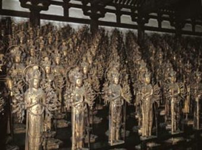

1164年、後白河上皇が平清盛に命じて創建させた寺院。柱と柱の間が33あることから三十三間堂と呼ばれる。南北125ｍに及ぶ建物は、木造建築では世界最長。堂内の中央に本像が１体、その左右に10段50列で500体ずつ、合計1001体の黄金色の千手観音立像がずらりと並ぶ様は見る者を圧倒する。誰でも素直に感動できる名所の一つだ。戻り
David Felipe Rico HernandezUniversidad Nacional de Colombia